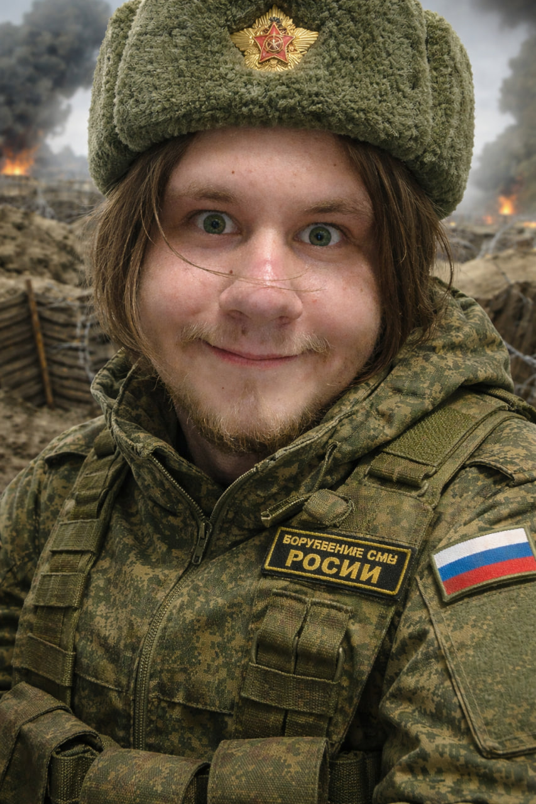
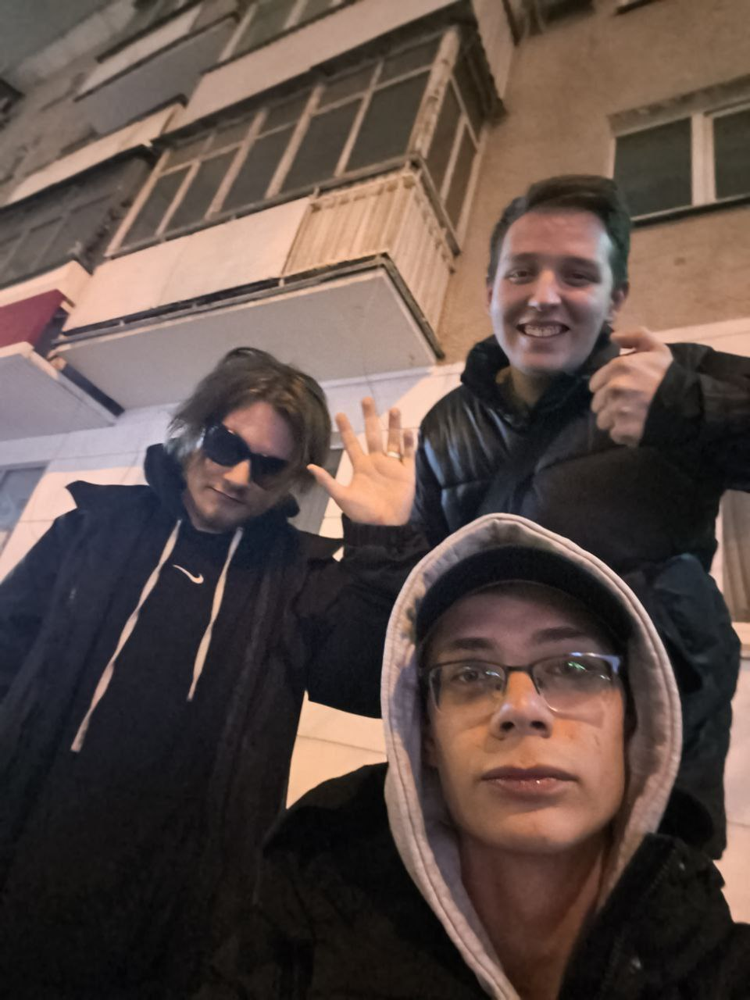
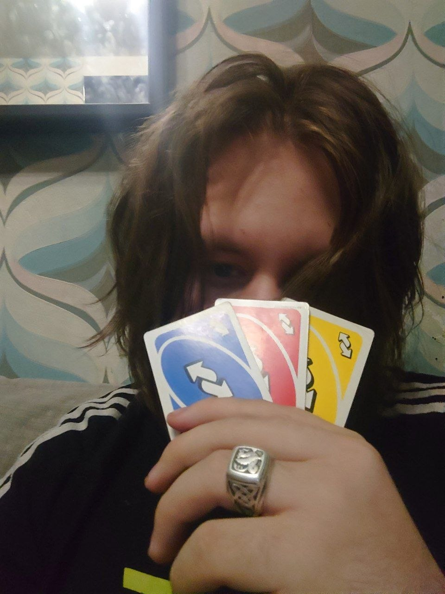
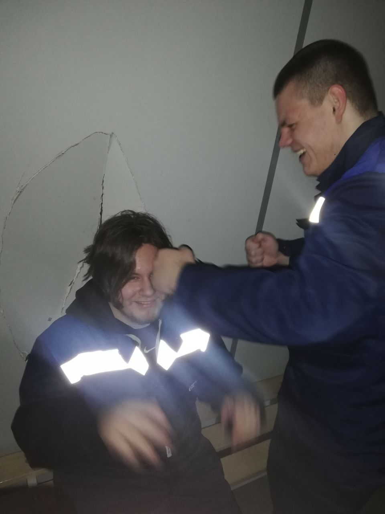
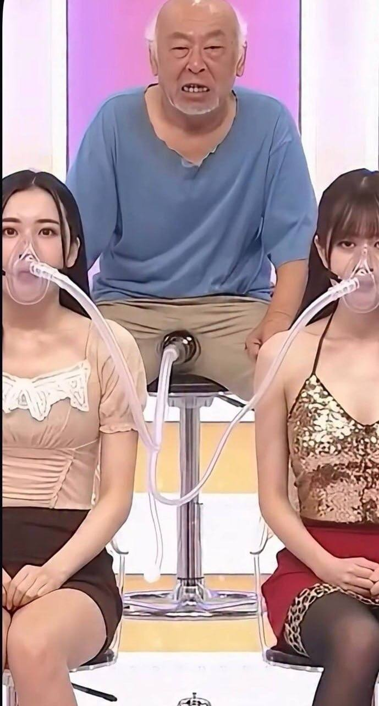
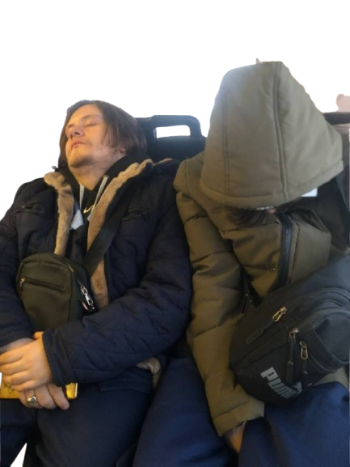
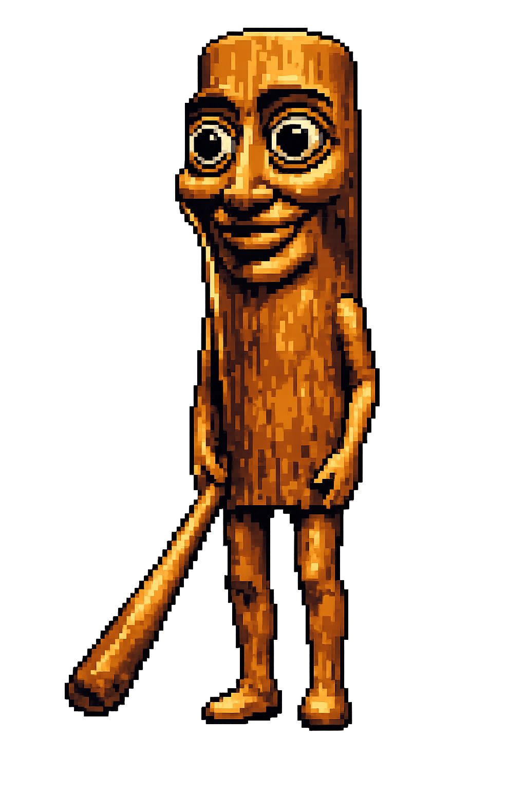

Кирилл — потрясающий человек. Забавно, но я не осознавал этого, пока не узнал, что он скоро умрёт. Что это произойдёт скоро. Что это реальность. Тогда я задумался о многом. О вещах, о которых я давно не задумывался. Наверное, я как-то считал его само собой разумеющимся или что-то в этом роде. Я имею в виду, что наши друзья всегда рядом. Ты ожидаешь, что они всегда будут приставать к тебе с просьбами пойти на озон, пройти сому, отьебатся пока он трогает жировые складки юли, соски которой напоминают свиные или пробовать новое, чтобы однажды стать более разносторонним человеком. И заставляют тебя вставать рано по выходным, чтобы провести «час тв» и все такое, что раньше сводило меня с ума. Сейчас я так не чувствую. Все изменилось с тех пор, как Кирилл занял кредит. С тех пор, как я понял, что однажды в недалеком будущем его может не стать рядом, чтобы сводить меня с ума.
Теперь я чувствую себя счастливым, когда он спрашивает меня, как прошел день (раньше я совершенно ненавидел этот вопрос), или придирается, что мол «зачем перед озоном мыться, лол.» Однажды его уже не будет рядом, чтобы спросить. Теперь я чувствую себя счастливым, когда слышу, как его инвалидная коляска скрипит пока мы гуляем. Мне даже нравится слышать, как он запыхается. Это значит, что он все еще рядом. Все еще мой друг.


Мой друг — студент укниу, и он досадно умный.
В смысле, досадно умный, как супергений. Он знает самые невероятные вещи. Например,
как написать print ("Hello World") на языке Python. И он даже сделал cockClicker
где размеры кнопок он задает сам в чистом питоне. Или показывает своим друзьям
как он мощно играет в кс. Он постоянно выдает такие мелкие факты обо всем на свете. Он
даже не осознает, какой он придурок, когда так делает, он просто очень увлечен жиром.
Думаю, он действительно не понимает, что не все такие. Ему нравится лежать и потеть
из-за юлечки — он в основном лежит на кровати — потому что, как он говорит,
юлечка научила его мастерству потения и лежания, и он всегда все объясняет по ходу дела.
Я не смотрю как он потеет, но слышал, что он заливает всю кровать свиным жиром.
Он много практикуется дома, это точно.
За все время, что я учусь в шараге (я учусь на втором курсе), мне всегда приходилось
слушать, что о нем думают другие студенты. Я всегда был другом мистера Клевцова.
(Иногда они называют его костылем, так называются те совершенно нелепые
отростки, которые он называет ногами). Некоторые студенты его оскорбляли просто для того, чтобы меня раздражать.
Некоторые просто издевались над ним, потому что так обычно поступают с карликами.
Но дело в том, что он ожидает от всех, чтобы они потели изо всех сил, так же как и он сам,
и если ты не потеешь изо всех сил, он не пощадит тебя. Так
он ведет себя и дома, и в школе. Я только недавно понял, какое это хорошее
качество. Именно это делает его смелым в его борьбе с кредитом и то, что
сделало меня смелым тоже, когда я был моложе. Хотел я этого или нет.
В любом случае, я всегда просто хотел быть обычным студентом в шараге, но из-за того, что
мой друг был там знаменитостью, я был другим. Теперь я понимаю две вещи.
Во-первых, я и так отличаюсь от других, потому что у меня ДЦП, так что это уже факт.
И во-вторых, он — идеальный друг для меня. Он не может заниматься многими физическими видами деятельности из-за
своей инвалидности, и мне это не мешает, а вот многим
другим своим друзьям, которых я встречал, это бы не понравилось (Мише). Они бы разочаровались, потому что увлекаются
спортом или чем-то еще. Я имею в виду, у кирилла нет инвалидности, но ты точно
не захотел бы видеть, как он бросает футбольный мяч. Так что в этом смысле мы ладим. Это
логично, что он мой друг, а я его друг. Я хочу сказать, что мне уже все равно,
что говорят дауны в шараге. Главное, что он хороший
друг, и никто не может сказать, что ему все равно, чем он занимается. Я знаю, что ему
не все равно. После нашей компании он больше всего любит программирование и слушать музыку.
Я очень хочу, чтобы он мог продолжать заниматься тем, что любит,
еще долго. Ради него, ради его друзей, ради меня и его семьи.
Для нашей компании это было очень тяжелое время с тех пор, как у моего друга обнаружили кредит. Не
то чтобы когда-либо бывало подходящее время для чего-то столь ужасного и страшного,
но для нас это было определенно плохое время. Миша ещё имел фантомные месячные и постоянно выебывался.
И это было до того, как ему поставили диагноз. У нас не
много денег, но мы справлялись, пока не появились все эти проценты по кредитке. И
мой друг довольно гордый — ладно, очень гордый — и не хочет принимать
помощь. Вот почему я это делаю. Не потому, что хочу его разозлить или
расстроить, а потому, что хочу, чтобы у него был шанс бороться, несмотря ни на что.
Одна вещь, которую я не понимаю, — почему спасение чьей-то жизни стоит больше, чем
обычный человек может заплатить. Я считаю, что это неправильно. Я имею в виду, одна из главных причин, по которой
мой друг с самого начала вообще не хотел идти работать, заключалась в том, что он не мог закрыть проценты и работать за копейки.
Вот в чем дело с моим другом — он любит нас больше всего на свете. Больше, чем себя. Но мы хотим, чтобы он
был рядом, и хотим, чтобы он сделал все возможное, чтобы остаться с нами как можно
дольше. Выплатить кредит — единственный шанс спасти ему жизнь. А мы
не можем себе это позволить. И каждый проходящий день — это еще один день, который я не смогу провести с
ним. И я не хочу рассказывать Никите о нём. Я хочу, чтобы он узнал его сам.
Какой же у меня прекрасный друг, Но он в беде.
У него кредит 80к. Ему нужны деньги. СЕЙЧАС!
Если хотите помочь, пожалуйста, перечислите пожертвованиев наш операционный фонд и молитесь за моего друга!